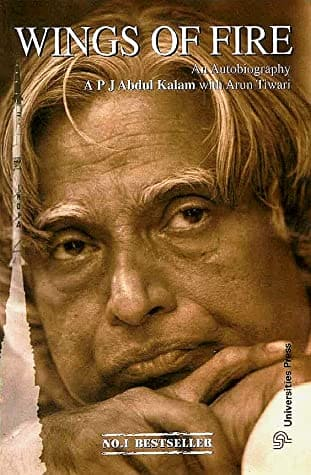

My self Priya. I am from Andhrapradesh, India. I done my bachelors in civil engineering and I want to do my masters in northwest missouri state university in advance computer science.
Wings of Fire is the autobiography of the former President of India, Dr. Abdul Kalam. Kalam went from being a humble boy in South India to developing India's nuclear weapons and becoming President. Through this autobiography, the reader gains a glimpse into pre-partition India. Kalam also exposes readers to the positive thinking and ideas that helped him become such a success. This is the story of Kalam's rise from obscurity and his personal and professional struggles. It is also a saga of independent India's struggle for technological self-sufficiency and defensive autonomy. It is almost impossible not to be inspired by the life of Mr. Kalam
